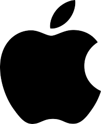

Dunyodagi 5 ta eng mashhur telefon kompaniyalari

Samsung-- Telefoniya, kompyuter va tegishli texnologiyalarning ajoyib ishlab chiqaruvchisi. Kompaniyaning bosh ofisi Pivdenniy Koreya yaqinida joylashgan. Yangilarida byudjet liniyalari mavjud, shuningdek, premium-sinf modellari ham, Flagship Galaxy. Firma qurilmalarni saqlashning funksionalligi va yuqori sifatiga hurmatni ta'kidlaydi, lekin innovatsiyalar bilan turmush qurishga emas.
LG-- Electronics Pvdeno-Koreya va Osiyo bozorlarida Samsungning asosiy raqobatchisi hisoblanadi. Model diapazoni brend juda katta boylikka ega, xilma-xillik va sifatning optimal o'zgaruvchanligiga ega ko'plab modellar mavjud. Kompaniya texnologik "to'ldirish" mavjudligidan va qoliplarning original dizaynidan foydalanadi.
Xiaomi-- o'rta narx oralig'ida va bir xil sifatda smartfonlarni chiqarishga ixtisoslashgan Xitoy kompaniyasi. Premium toifadagi modellar bu erda kamdan-kam uchraydi. Qolgan vaqtlarda qo'sh turdagi mobil telefonlar bilan jihozlangan kameralarga alohida e'tibor beriladi.

Apple-- Amerika kompaniyasining smartfonlari muvaffaqiyat, maqom, mashhurlik ramzi. Qolgan soatlarda firmalarning arzon qurilmalari va ularni joriy etish tendentsiyasi kuzatiladi, ammo komponentlar soni va texnologiyalarning zamonaviyligi umumiy emas.
Huawei-- Xitoy uyida tugatish uchun yana bir savdo belgisi, Smartfonlarning keng assortimentini o'rtacha narxda targ'ib qiling - 10 000 dan 60 000 rublgacha. Xushbo'y hid texnologiya, ko'p qirrali va amaliylik, umumiy yorqinlik, uzoq vaqt davomida ortda qolmagan amaliyot orqali xaridorlarning qiziqishini uyg'otadi.